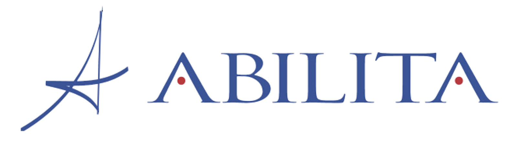

How It Works
The Program
Independent contractors are being offered a stipend to independently select and manage their own internet, network and wi-fi services. The agent owns the full process – choosing a provider, sizing bandwidth & connectivity, determining backup service plans, and sourcing the equipment – including routers, modems and headsets.
Besides any stipend, the main perk of the program is accessibility. If desired, agents, team members, and customers will be able to access and use their personal devices on the wi-fi. Agents not familiar with existing softphone options will appreciate the freedom & flexibility they have and would be able to offer the team of not being tied down to the desk phone.
Agents should prepare for a few operational changes associated with the switch that will impact their existing use of desktop phones, printers, and corporate machines.
What you'll need
Agents will need to contact their corporate technical teams to confirm eligibility and enroll. Broadband is the standard for any connectivity, however, agent needs vary and certain bandwidth and network hardware are recommended based on the size of the office and team members. We can assist you with creating a business continuity plan – you have choices - some options may need extra equipment or secondary services. We will help you in regards to any service related hardware and headsets that become agent responsibility.
Where We Fit (Technology Advisors)
Under the old model, State Farm selected or provided a list of approved vendors – this new model is "Agent Choice". There is no approved list of providers, it's genuinely your choice.
Altmoz Technology Partners is not affiliated with any single provider and is able to quote and advise on most national, regional, & local providers. Internet providers partner with independent advisors to give business customers a faster, better-informed path to the right service. We hold provider maps, quoting tools, and process shortcuts not available to the general public – making it quick and easy to evaluate your options, potentially saving you hours of research and calling.
The internet provider you select compensates us for the service – there are no markups, hidden costs or ongoing fees.
Our Team
Abilita, our operational partner, is a longstanding telecom expense management company specializing in cost & billing optimization across service providers including internet, mobile, hardware and cloud communication. Abilita works with Altmoz Technology Partners to assist with quote and provider work.

The Process
The process is easy. After a quick assessment call to identify your specific needs, we research providers, request and compare quotes and help you make a choice that fits. We'll prepare you for the transition by reviewing the install process, discussing the service, equipment swap, and potential operational changes.
Your selected internet provider does the install and provides primary connectivity equipment and service support. State Farm removes company-owned equipment and arranges its return. They work with you to confirm technical readiness and access – we can point you to the right internal contact if needed.
Most setups are simple - we will consult you regarding any associated equipment your particular install may require including potential switches, mesh networks, or headsets.
The Stipend
We are aware of a $200 monthly stipend that starts when you've finished the process.
Because service needs vary by agent, there is no fixed number to quote. Because we don't charge an advisor fee, the stipend may fully cover internet service, but there is a chance it will require a supplement.
Our job is to make sure you get the best value for your expenses and business.